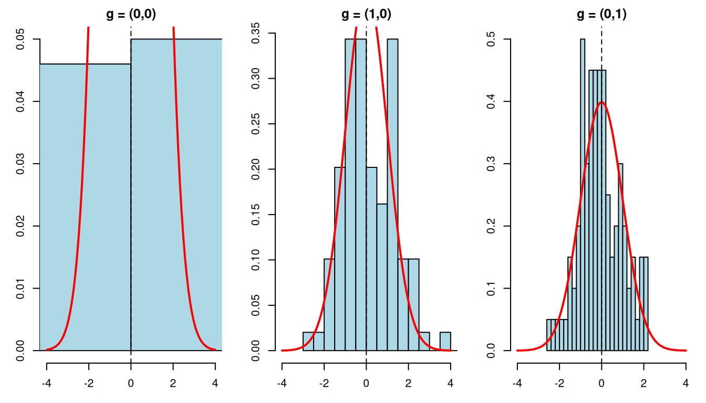

library(CausalModel)
library(knitr)
set.seed(42)43 Partial Interference
Most causal inference methods assume SUTVA: one unit’s treatment does not affect another unit’s outcome. This is often not true. Vaccinating your neighbor can reduce your risk of infection. A job training program for one worker may affect another worker’s job prospect. A student’s test score may depend on whether classmates received tutoring.
Partial interference (Sobel, M.E. (2006), “What Do Randomized Studies of Housing Mobility Demonstrate?”, Journal of the American Statistical Association, 101(476); Hudgens, M.G. & Halloran, M.E. (2008), “Toward Causal Inference With Interference”, Journal of the American Statistical Association, 103(482)) is one way to make this manageable. Units are organized into clusters. Interference can happen within a cluster, but not between clusters. This is still a strong assumption, but it is weaker than no interference.
Qu et al. (2021) develop clustered IPW and AIPW estimators for this setting – see the CausalModel R package’s documentation/vignette for the exact reference. Here I just simulate data and see how the functions work.
43.1 The Setup
43.1.1 Clusters and Groups
Each unit \(i\) belongs to a cluster \(c\), such as a household, classroom, or village. Within each cluster, units are also organized into groups indexed by \(j = 0, 1, \ldots, J-1\). The group structure \(\mathbf{s} = (s_0, s_1, \ldots, s_{J-1})\) gives the number of units per group.
For example, with group_struct = c(2, 3):
- Group 0 has 2 units
- Group 1 has 3 units
- Each cluster has 5 units total
The groups can be real roles, such as parents and children, or they can just be a modeling device.
43.1.2 The Neighborhood Configuration G
The key object is the neighborhood configuration \(G_i = (g_0, g_1, \ldots, g_{J-1})\). Here \(g_j\) counts how many other units in group \(j\) within unit \(i\)’s cluster are treated. “Other” means excluding unit \(i\) itself.
With group_struct = c(2, 3):
- If unit \(i\) is in group 0, then \(g_0 \in \{0, 1\}\) (the other unit in group 0 is treated or not) and \(g_1 \in \{0, 1, 2, 3\}\) (0 to 3 units in group 1 are treated)
- \(G\) records the treatment environment that unit \(i\) experiences
43.1.3 Heterogeneous Treatment Effects β(G)
Under partial interference, the treatment effect for unit \(i\) depends on its neighborhood \(G_i\):
\[\beta(G) = E[Y_i(1, G) - Y_i(0, G)]\]
where \(Y_i(z, G)\) is unit \(i\)’s potential outcome when its own treatment is \(z\) and its neighborhood configuration is \(G\).
A simple model is to make the treatment effect linear in the neighborhood:
\[\beta(G) = \tau + \sum_{j=0}^{J-1} \gamma_j \cdot g_j\]
where:
- \(\tau\) is the direct effect when no neighbors are treated
- \(\gamma_j\) is the spillover from group \(j\), per treated neighbor
43.1.3.1 Example
With group_struct = c(2, 3), \(\tau = 1\), \(\gamma_0 = 0.5\), \(\gamma_1 = 0.1\):
| Neighborhood \(G\) | Formula | \(\beta(G)\) |
|---|---|---|
| \((0, 0)\) | \(1 + 0 \times 0.5 + 0 \times 0.1\) | 1.0 |
| \((1, 0)\) | \(1 + 1 \times 0.5 + 0 \times 0.1\) | 1.5 |
| \((0, 1)\) | \(1 + 0 \times 0.5 + 1 \times 0.1\) | 1.1 |
| \((1, 1)\) | \(1 + 1 \times 0.5 + 1 \times 0.1\) | 1.6 |
Having one treated neighbor in group 0 adds 0.5 to the treatment effect; having one in group 1 adds only 0.1.
43.2 Estimation
43.2.1 Two Propensity Models
Standard IPW uses one propensity score, \(P(Z_i = 1 | X_i)\). Under interference, we need two:
- Individual propensity: \(P(Z_i = 1 | X_i)\) — probability of being treated given covariates (logistic regression)
- Neighborhood propensity: \(P(G_i = g | Z_i, X_i)\) — probability of neighborhood configuration \(g\) given own treatment and covariates (multinomial logistic regression)
The second piece is the new part. It models how likely a particular treatment environment is, conditional on covariates.
Note the conditioning on \(Z_i\) in the second piece. Own treatment \(Z_i\) and the neighborhood exposure \(G_i\) are usually dependent by design — for a network or cluster exposure mapping, \(G_i\) is built from the treatments of \(i\)’s neighbours, which are correlated with \(i\)’s own assignment mechanism. The joint exposure probability must therefore be modeled as a joint distribution \(P(Z_i=z, G_i=g \mid X_i)\), or via the valid factorization \(P(Z_i=z\mid X_i)\,P(G_i=g\mid Z_i=z, X_i)\). A product of the two marginals \(P(Z_i\mid X_i)P(G_i\mid X_i)\) is only correct when own and neighborhood treatment are conditionally independent given \(X_i\), which is not the typical case.
43.2.2 Clustered IPW
The clustered IPW estimator for \(\beta(g)\) reweights outcomes by the joint exposure probability, written here as the conditional factorization:
\[\hat{\beta}_{\text{IPW}}(g) = \frac{1}{N} \sum_i \left[ \frac{\mathbf{1}(Z_i=1, G_i=g)}{P(Z_i=1|X_i) \cdot P(G_i=g|Z_i=1,X_i)} - \frac{\mathbf{1}(Z_i=0, G_i=g)}{P(Z_i=0|X_i) \cdot P(G_i=g|Z_i=0,X_i)} \right] Y_i\]
This gives a separate treatment-effect estimate at each neighborhood configuration \(g\).
43.2.3 Clustered AIPW (Doubly Robust)
The AIPW version adds outcome models:
- Fit separate outcome models \(E[Y | X, Z, G=g]\) for each configuration \(g\)
- Combine with propensity weighting so the estimator is consistent if either the outcome model or the (joint) exposure-propensity model is correct. Here the propensity part must correctly model the joint exposure mechanism \(P(Z_i, G_i \mid X_i)\), not two independent marginals.
This is the estimator I would usually try first, for the same reason standard AIPW is attractive.
43.2.4 Variance Estimation
Standard errors are computed by a matching-based variance estimator. Within each group and neighborhood configuration, units are matched on standardized covariates, and the variance is estimated from the matched pairs. This avoids a cluster bootstrap, which can be expensive here.
43.3 Using CausalModel
43.3.1 Generate Clustered Data
The generate_fixed_cluster() function creates synthetic data where the interference structure is known.
cdata <- generate_fixed_cluster(
clusters = 200,
group_struct = c(2, 3), # 2 units in group 0, 3 in group 1
tau = 1, # direct effect
gamma = c(0.5, 0.1) # spillover: 0.5 per treated in group 0, 0.1 in group 1
)
cat("Total units:", length(cdata$Y), "\n")Total units: 1000 Units per cluster: 5 Treatment prevalence: 0.477 Each unit has:
-
Y— observed outcome -
Z— treatment indicator (0/1) -
X— individual covariates -
cluster_labels— which cluster the unit belongs to -
group_labels— which group within the cluster (0-indexed) -
ingroup_labels— position within the group (0-indexed)
43.3.2 Construct the Clustered Object
cl_obj <- clustered(
Y = cdata$Y,
Z = cdata$Z,
X = cdata$X,
cluster_labels = cdata$cluster_labels,
group_labels = cdata$group_labels,
ingroup_labels = cdata$ingroup_labels,
n_matches = 50
)The clustered() constructor does several things:
- Augments individual covariates with cluster-level aggregates (mean of neighbors’ covariates)
- Fits the individual propensity model (logistic regression)
- Fits the neighborhood propensity model (multinomial logistic regression)
- Computes \(G\) for each unit — the number of treated neighbors per group
43.3.3 Estimate Treatment Effects
43.3.3.1 Clustered AIPW
result_aipw <- est_via_aipw(cl_obj)The result is a list with one element per group. Each element contains beta_g, the treatment effects at each neighborhood configuration, and se, the standard errors:
for (j in seq_along(result_aipw)) {
cat(sprintf("Group %d:\n", j - 1))
valid <- !is.nan(result_aipw[[j]]$beta_g) & result_aipw[[j]]$se > 0
df <- data.frame(
g_index = which(valid) - 1,
beta_g = round(result_aipw[[j]]$beta_g[valid], 3),
se = round(result_aipw[[j]]$se[valid], 3)
)
print(df, row.names = FALSE)
cat("\n")
}Group 0:
g_index beta_g se
0 0.677 0.364
1 1.572 0.347
3 1.447 0.315
4 1.870 0.257
6 1.141 0.276
7 2.003 0.276
9 1.015 0.428
10 2.674 0.384
Group 1:
g_index beta_g se
0 1.528 0.311
1 1.634 0.228
2 2.126 0.331
3 1.280 0.266
4 1.799 0.188
5 2.180 0.269
6 1.272 0.419
7 2.137 0.247
8 2.850 0.38943.3.3.2 Clustered IPW
result_ipw <- est_via_ipw(cl_obj)43.3.4 Interpreting the Results
The neighborhood configurations are encoded as integers. For group_struct = c(2, 3), the encoding for group 0 is:
\[G_{\text{encoded}} = g_0 + g_1 \times (s_0 + 1)\]
where \(s_0 = 2\) is the size of group 0. The stride for the second dimension is \(s_0 + 1 = 3\) because the package allocates slots for \(g_0 \in \{0, 1, 2\}\), even though \(g_0 = 2\) is impossible for units in group 0.
| \(g_0\) | \(g_1\) | Encoded | True \(\beta\) |
|---|---|---|---|
| 0 | 0 | 0 | 1.0 |
| 1 | 0 | 1 | 1.5 |
| 0 | 1 | 3 | 1.1 |
| 1 | 1 | 4 | 1.6 |
| 0 | 2 | 6 | 1.2 |
| 1 | 2 | 7 | 1.7 |
Some configurations do not have enough observations. The se > 0 filter removes degenerate cases.
43.4 Monte Carlo Validation
Now run a small Monte Carlo. Generate data 100 times, estimate \(\beta(G)\) each time, and check bias, SE calibration, and coverage.
n_clusters <- 200
group_struct <- c(2, 3)
tau_int <- 1
gamma_int <- c(0.5, 0.1)
n_reps <- 100
# True beta(g) function
true_beta <- function(g) tau_int + sum(g * gamma_int)
# Track results for group 0 at three neighborhood configurations
g_indices <- list(c(0, 0), c(1, 0), c(0, 1))
g_encoded <- sapply(g_indices, function(g) {
g[1] + g[2] * (group_struct[1] + 1) + 1 # 1-indexed; stride = max_g0 + 1
})
true_values <- sapply(g_indices, true_beta)
int_results <- array(NA, dim = c(n_reps, length(g_indices), 2),
dimnames = list(NULL, NULL, c("beta", "se")))set.seed(2024)
for (i in seq_len(n_reps)) {
cdata <- generate_fixed_cluster(
clusters = n_clusters, group_struct = group_struct,
tau = tau_int, gamma = gamma_int
)
cl_obj <- clustered(
Y = cdata$Y, Z = cdata$Z, X = cdata$X,
cluster_labels = cdata$cluster_labels,
group_labels = cdata$group_labels,
ingroup_labels = cdata$ingroup_labels,
n_matches = 50
)
res <- est_via_aipw(cl_obj)
for (j in seq_along(g_indices)) {
idx <- g_encoded[j]
int_results[i, j, "beta"] <- res[[1]]$beta_g[idx]
int_results[i, j, "se"] <- res[[1]]$se[idx]
}
}int_rows <- list()
for (j in seq_along(g_indices)) {
betas <- int_results[, j, "beta"]
ses <- int_results[, j, "se"]
valid <- !is.nan(betas) & !is.nan(ses) & ses > 0
betas <- betas[valid]
ses <- ses[valid]
tv <- true_values[j]
ci_lo <- betas - 1.96 * ses
ci_hi <- betas + 1.96 * ses
int_rows[[j]] <- data.frame(
g = paste0("(", paste(g_indices[[j]], collapse = ","), ")"),
True_beta = tv,
Mean_est = mean(betas),
Bias = mean(betas) - tv,
Emp_SE = sd(betas),
Mean_SE = mean(ses),
Coverage = mean(ci_lo <= tv & tv <= ci_hi),
N_valid = length(betas)
)
}
tbl_int <- do.call(rbind, int_rows)
kable(tbl_int, digits = 3, row.names = FALSE,
caption = sprintf("Clustered AIPW (group 0, %d clusters, %d reps)",
n_clusters, n_reps))| g | True_beta | Mean_est | Bias | Emp_SE | Mean_SE | Coverage | N_valid |
|---|---|---|---|---|---|---|---|
| (0,0) | 1.0 | 2.107 | 1.107 | 8.760 | 0.448 | 0.820 | 100 |
| (1,0) | 1.5 | 1.569 | 0.069 | 0.549 | 0.415 | 0.899 | 99 |
| (0,1) | 1.1 | 1.083 | -0.017 | 0.248 | 0.246 | 0.930 | 100 |
par(mfrow = c(1, length(g_indices)), mar = c(3, 3, 2, 1))
for (j in seq_along(g_indices)) {
betas <- int_results[, j, "beta"]
ses <- int_results[, j, "se"]
valid <- !is.nan(betas) & !is.nan(ses) & ses > 0
t_stats <- (betas[valid] - true_values[j]) / ses[valid]
g_label <- paste0("(", paste(g_indices[[j]], collapse = ","), ")")
hist(t_stats, breaks = 20, freq = FALSE, col = "lightblue",
main = sprintf("g = %s", g_label),
xlab = "", xlim = c(-4, 4))
curve(dnorm(x), add = TRUE, col = "red", lwd = 2)
abline(v = 0, lty = 2)
}
If both the estimator and SE work well, the studentized statistics should look roughly normal.
43.5 What If You Ignore Interference?
What happens if we ignore interference and use a standard AIPW estimator? We get one number that averages over neighborhood configurations. That number is hard to interpret.
# Generate one dataset with interference
set.seed(42)
cdata <- generate_fixed_cluster(
clusters = 200,
group_struct = c(2, 3),
tau = 1,
gamma = c(0.5, 0.1)
)
# Naive: ignore clusters, treat as standard observational data
obs_naive <- observational(cdata$Y, cdata$Z, cdata$X)
naive_ate <- est_via_aipw(obs_naive)
cat("Naive AIPW (ignoring interference):", round(naive_ate$ate, 3), "\n")Naive AIPW (ignoring interference): 1.611 SE: 0.068 # Correct: use clustered estimator
cl_obj <- clustered(
Y = cdata$Y, Z = cdata$Z, X = cdata$X,
cluster_labels = cdata$cluster_labels,
group_labels = cdata$group_labels,
ingroup_labels = cdata$ingroup_labels,
n_matches = 50
)
result <- est_via_aipw(cl_obj)
cat("Clustered AIPW beta_g (group 0):\n")Clustered AIPW beta_g (group 0): g_index beta_g se
0 0.677 0.364
1 1.572 0.347
3 1.447 0.315
4 1.870 0.257
6 1.141 0.276
7 2.003 0.276
9 1.015 0.428
10 2.674 0.384The naive estimate gives some weighted average of the \(\beta(g)\) values, but it does not tell us how much is direct effect and how much is spillover. The clustered estimator separates those pieces. If spillovers are large, treating clusters may be more effective than treating isolated individuals.
43.6 Summary
Partial interference is a compromise. We do not assume away spillovers, but we do assume they stay inside clusters. Once we make that assumption, the neighborhood configuration \(G\) becomes part of the estimand. The effect is no longer just treatment versus control; it is treatment versus control under a particular neighborhood treatment environment.
The CausalModel package estimates these effects with clustered IPW and AIPW. The important practical lesson is that a standard AIPW estimate is not a good substitute. It collapses direct effects and spillovers into one number.